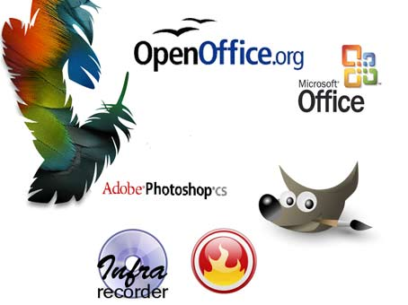
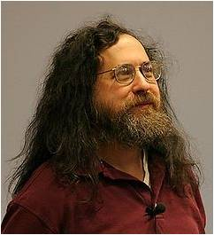

software libre y software propietario
Agustín Esquerra
Creado por Agustín Esquerra
¿Qué es el software?
Se refiere al soporte lógico de una computadora digital. Comprende el conjunto de componentes necesarios para realizar una tarea específica, contraponiéndose a componentes físicos del sistema (hardware). Incluye aplicaciones informáticas, software de sistema y provee una interfaz para el usuario.
¿Qué es el software propietario?
Hace referencia a cualquier programa informático donde están limitadas las posibilidades de uso, modificación y distribución. Una compañía posee los derechos de autor y controla y restringe los derechos del usuario sobre el programa. En este tipo de software destaca Bill Gates.
¿Qué es el software libre?
Este software respeta la libertad de los usuarios sobre el producto adquirido. Los programas pueden ser usados, copiados, modificados libremente. Suele estar disponible de manera gratuita o al precio de costo de la distribución a través de otros medios. En este tipo de software destaca Richard Stallman.
Microsoft
Fue fundada en 1975 por Bill Gates y Paul Allen. Se dedicó al sector de la informática. Desarrolla, fabrica, licencia y produce software propietario y equipos electrónicos. Sus productos más usados son el sistema operativo de Microsoft Windows y la suite Microsoft Office. A mediados de los 80 dominó el mercado con el sistema operativo MS-DOS
Bill Gates
Empresario y filántropo estadounidense. Cofundador de Microsoft.

 GNU/Linux
GNU/Linux
GNU se inicia en 1983 por Richard Stallman para desarrollar un sistema operativo Unix compuesto por un software libre. En 1991 Linus Torvalds empezó a trabajar para MINIX, lo que sería luego Linux.
Richard Stallman
Es una figura central del Software Libre. Lanzó el proyecto GNU.
Ventajas del software propietario
1.- Propiedad y decisión de uso del software por parte de la empresa
El desarrollo del software requiere grandes inversiones. Si no se protegiera, el estudio se realizaría sin necesidad, porque la competencia podría apropiarse del producto tras finalizarlo para sus propios fines.
2.- Soporte para todo tipo de hardware.
Los fabricantes de dispositivos para computadoras personales producen drivers o hardware sólo compatible con Windows para garantizar un soporte de hardware seguro.
3.- Mejor acabado de la mayoría de las aplicaciones.
Para un mayor rendimiento y un aumento en las ventas, se da mejor acabado a las aplicaciones en temas de estética y usabilidad de la aplicación.
4.- Las aplicaciones nº1 son propietarias.
El dominio del mercado interesa a los fabricantes de hardware, pero también de software.
5.- Ocio para computadoras.
Los desarrolladores de juegos tienen en su punto de mira el mercado lucrativo (consolas y computadoras). En el caso de los personales, la práctica totalidad de títulos benefician a Microsoft Windows.
6.- Menor necesidad de técnicos especializados.
El mejor acabado en estos sistemas permiten simplificar el tratamiento de dichos sistemas, reduciendo los costes de mantenimiento.
7.- Mayor mercado laboral actual.
Cualquier trabajo que se relacionado con la informática pasará por conocer herramientas de software propietario.
8.- Mejor protección de la obras con copyright
Las obras que se protegen se ven beneficiadas por mecanismos anticopia que plagian o dificultan la piratería.
9.- Unificación de productos.
Se toman decisiones centralizadas en torno a una línea de productos para que no se desvíe la idea principal y generar productos funcionales altamente compatibles.
Ventajas del software libre
1.- Económico
El bajo o nulo coste de los productos libres permiten proporcionar servicios y ampliar sus infraestructuras sin que se vean mermados sus intentos de crecimiento por no poder hacer frente al pago de las licencias.
2.- Libertad de uso y redistribución
Las licencias ya existentes permiten instalar el software tantas veces y en tantas computadoras como se quiera.
3.- Independencia tecnológica.
El acceso al código fuente (instrucciones que debe seguir la computadora para ejecutar un programa) permite desarrollar productos sin desarrollar el producto desde cero.
4.- Fomento de la libre competencia al basarse en servicios y no licencias.
Los modelos de negocio generados por este software es la contratación de servicios de atención al cliente.
5.- Soporte y compatibilidad a largo plazo.
En estos software se emplean nuevas tecnologías que siempre sean compatibles con los sistemas anteriores, al contrario que en los software propietario,
6.- Formato estándar
Permiten una interoperatividad más alta entre sistemas evitando incompatibilidades.
7.- Sistemas sin puertas traseras y más seguros.
El acceso al código fuente permite que hackers y empresas de seguridad puedan auditar programas. Las puertas traseras son ilógicas.
8.- Corrección mas rápida y eficiente de fallos.
Los fallos se solucionan más rápido en este software.
9.- Métodos simples y unificados de gestión del software.
La mayoría de las distribuciones de Linux incorporan algún sistema que unifica el método de instalación de programas, librerías…
10.- Sistemas de expansión.
Las ventajas que aportan las soluciones libres a muchas empresas y las aportaciones a la comunidad han permitido un constante crecimiento del software libre.
Propietario vs libre
- Photoshop vs Gimp
- Nero Burning Rom vs CDBurnerXP Pro
- McAfee Viruscan vs AntiVir
- MSN vs Pidgin
- Windows Media Player vs VLC media player
- WinZip vs 7-Zip
- Internet explorer vs Mozilla Firefox